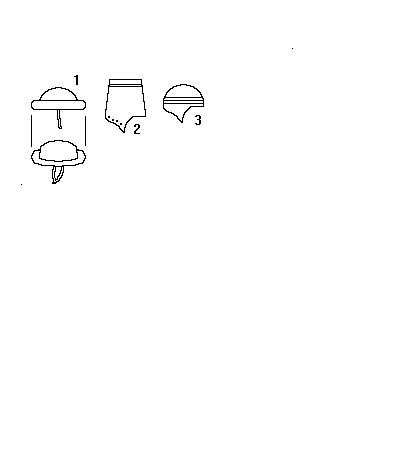

Spanish Hats

- 13th Century, actual construction unknown.
- 13th Century, may be either decorated leather or embroidered cloth. Extends over the
ears.
- 13th Century, actual construction unknown.
Some Clothing of the Middle Ages - Spanish Hats, by I. Marc Carlson. Copyright
1996.